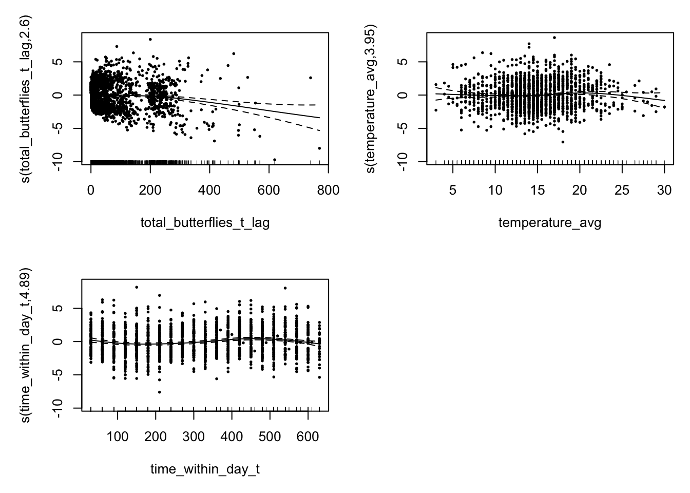
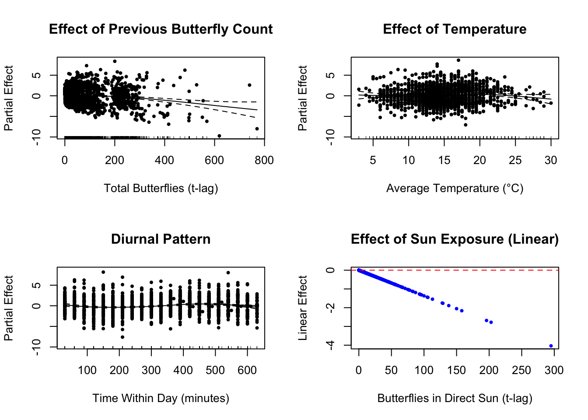
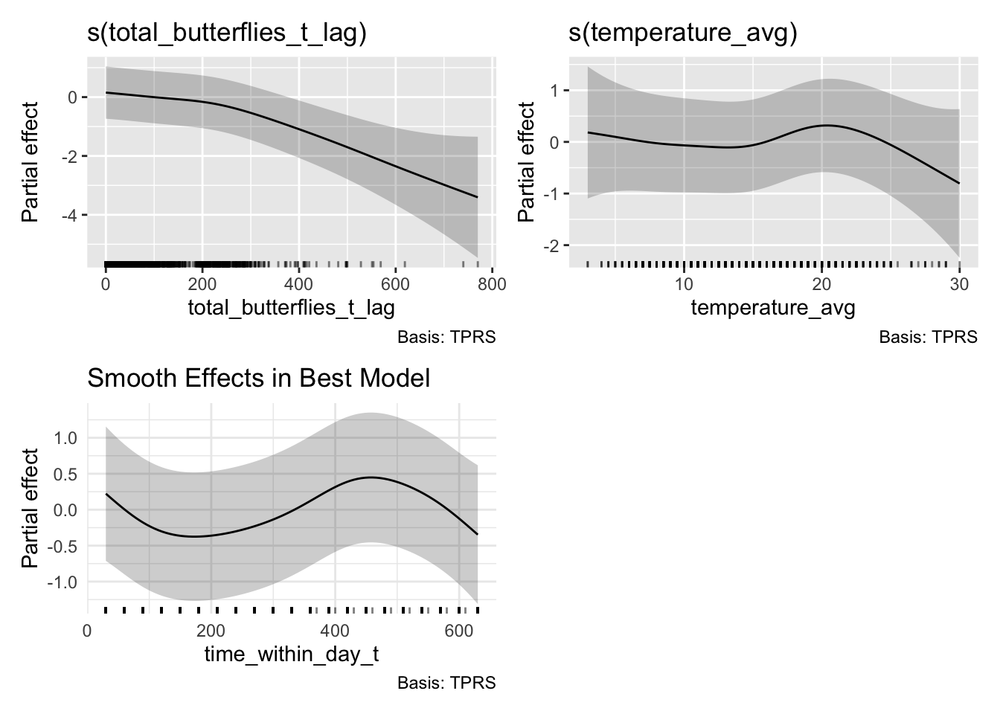
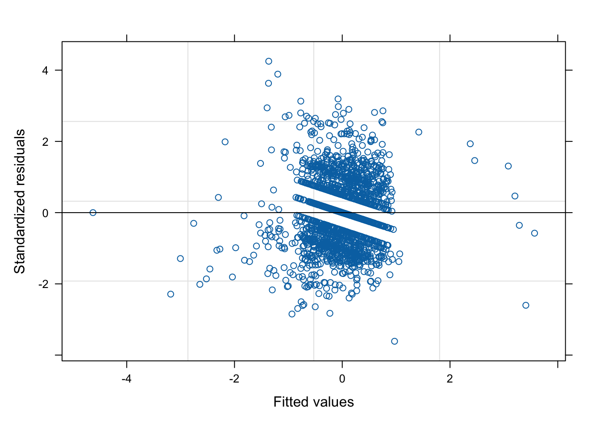
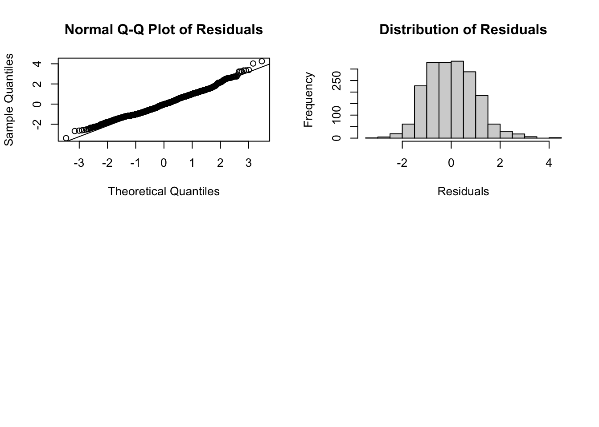

Code
library(tidyverse)
library(mgcv)
library(lubridate)
library(plotly)
library(knitr)
library(DT)
library(here)This analysis examines changes in monarch abundance using a robust GAM (Generalized Additive Model) approach. We’ll explore temporal patterns and potential drivers of monarch population dynamics.
library(tidyverse)
library(mgcv)
library(lubridate)
library(plotly)
library(knitr)
library(DT)
library(here)# Load the monarch analysis data
monarch_data <- read_csv(here("data","monarch_analysis_lag30min.csv"))
glimpse(monarch_data)Rows: 1,894
Columns: 32
$ deployment_day <chr> "SC10_20240106", "SC10_20240106", "…
$ deployment_id <chr> "SC10", "SC10", "SC10", "SC10", "SC…
$ timestamp_t <dttm> 2024-01-06 12:06:04, 2024-01-06 12…
$ image_filename_t <chr> "SC10_20240106120604.JPG", "SC10_20…
$ total_butterflies_t <dbl> 1, 4, 3, 25, 19, 30, 20, 19, 39, 28…
$ butterflies_direct_sun_t <dbl> 1, 4, 3, 0, 0, 0, 0, 0, 0, 0, 0, 0,…
$ temperature_t <dbl> 17, 17, 17, 16, 15, 15, 15, 14, 13,…
$ timestamp_t_lag <dttm> 2024-01-06 11:36:04, 2024-01-06 12…
$ image_filename_t_lag <chr> "SC10_20240106113604.JPG", "SC10_20…
$ total_butterflies_t_lag <dbl> 0, 1, 4, 3, 25, 19, 30, 20, 19, 39,…
$ butterflies_direct_sun_t_lag <dbl> 0, 1, 4, 3, 0, 0, 0, 0, 0, 0, 0, 0,…
$ temperature_t_lag <dbl> 17, 17, 17, 17, 16, 15, 15, 15, 14,…
$ actual_lag_minutes <dbl> 30.00000, 30.00000, 30.00000, 30.00…
$ temperature_avg <dbl> 17.0, 17.0, 17.0, 16.5, 15.5, 15.0,…
$ butterfly_difference <dbl> 1, 3, -1, 22, -6, 11, -10, -1, 20, …
$ butterfly_difference_cbrt <dbl> 1.000000, 1.442250, -1.000000, 2.80…
$ butterfly_difference_log <dbl> 0.000000, 1.098612, 0.000000, 3.091…
$ time_within_day_t <dbl> 300.0000, 330.0000, 360.0000, 390.0…
$ is_first_obs_of_day_t <lgl> FALSE, FALSE, FALSE, FALSE, FALSE, …
$ observation_order_within_day_t <dbl> 11, 12, 13, 14, 15, 16, 17, 18, 19,…
$ time_within_day_t_lag <dbl> 270, 300, 330, 360, 390, 420, 450, …
$ is_first_obs_of_day_t_lag <lgl> FALSE, FALSE, FALSE, FALSE, FALSE, …
$ observation_order_within_day_t_lag <dbl> 10, 11, 12, 13, 14, 15, 16, 17, 18,…
$ avg_sustained <dbl> 0.8533333, 0.7400000, 0.8300000, 0.…
$ max_gust <dbl> 2.0, 2.0, 2.2, 2.0, 1.6, 1.3, 1.6, …
$ mode_gust <dbl> 1.2, 1.2, 0.9, 1.3, 0.7, 1.3, 0.9, …
$ gust_sd <dbl> 0.3759433, 0.4020636, 0.3363940, 0.…
$ wind_obs_count <dbl> 30, 30, 30, 30, 30, 30, 30, 30, 30,…
$ Observer <chr> "Emery", "Emery", "Emery", "Emery",…
$ horizontal_dist_to_cluster_m <dbl> 7.5, 7.5, 7.5, 7.5, 7.5, 7.5, 7.5, …
$ grove <chr> "Spring Canyon", "Spring Canyon", "…
$ view_id <chr> "2A", "2A", "2A", "2A", "2A", "2A",…# Check grove distribution
table(monarch_data$grove)
Spring Canyon UDMH
1873 21 # Remove any rows with missing values in key variables and exclude SC_8
model_data <- monarch_data %>%
filter(deployment_id != "SC_8",
!is.na(butterfly_difference_cbrt),
!is.na(total_butterflies_t_lag),
!is.na(max_gust),
!is.na(temperature_avg),
!is.na(butterflies_direct_sun_t_lag),
!is.na(deployment_id),
!is.na(deployment_day),
!is.na(Observer),
!is.na(observation_order_within_day_t))
cat("Clean dataset has", nrow(model_data), "observations\n")Clean dataset has 1894 observationslibrary(nlme)
# Define the random effects structure and correlation
random_structure <- list(deployment_id = ~ 1, Observer = ~ 1, deployment_day = ~ 1)
correlation_structure <- corAR1(form = ~ observation_order_within_day_t | deployment_day)
# Model specifications for AIC comparison
model_specs <- list(
# Null model
"M0_null" = "butterfly_difference_cbrt ~ total_butterflies_t_lag",
# Single variable models
"M1_gust" = "butterfly_difference_cbrt ~ total_butterflies_t_lag + max_gust",
"M2_temp" = "butterfly_difference_cbrt ~ total_butterflies_t_lag + temperature_avg",
"M3_sun" = "butterfly_difference_cbrt ~ total_butterflies_t_lag + butterflies_direct_sun_t_lag",
# Two-variable combinations
"M4_gust_temp" = "butterfly_difference_cbrt ~ total_butterflies_t_lag + max_gust + temperature_avg",
"M5_gust_sun" = "butterfly_difference_cbrt ~ total_butterflies_t_lag + max_gust + butterflies_direct_sun_t_lag",
"M6_temp_sun" = "butterfly_difference_cbrt ~ total_butterflies_t_lag + temperature_avg + butterflies_direct_sun_t_lag",
# Three-variable model (main effects only)
"M7_all_main" = "butterfly_difference_cbrt ~ total_butterflies_t_lag + max_gust + temperature_avg + butterflies_direct_sun_t_lag",
# Two-way interactions
"M8_gust_temp_int" = "butterfly_difference_cbrt ~ total_butterflies_t_lag + max_gust * temperature_avg",
"M9_gust_sun_int" = "butterfly_difference_cbrt ~ total_butterflies_t_lag + max_gust * butterflies_direct_sun_t_lag",
"M10_temp_sun_int" = "butterfly_difference_cbrt ~ total_butterflies_t_lag + temperature_avg * butterflies_direct_sun_t_lag",
# Two-way interactions with third variable as main effect
"M11_gust_temp_int_plus_sun" = "butterfly_difference_cbrt ~ total_butterflies_t_lag + max_gust * temperature_avg + butterflies_direct_sun_t_lag",
"M12_gust_sun_int_plus_temp" = "butterfly_difference_cbrt ~ total_butterflies_t_lag + max_gust * butterflies_direct_sun_t_lag + temperature_avg",
"M13_temp_sun_int_plus_gust" = "butterfly_difference_cbrt ~ total_butterflies_t_lag + temperature_avg * butterflies_direct_sun_t_lag + max_gust",
# All two-way interactions
"M14_all_two_way" = "butterfly_difference_cbrt ~ total_butterflies_t_lag + max_gust * temperature_avg + max_gust * butterflies_direct_sun_t_lag + temperature_avg * butterflies_direct_sun_t_lag",
# Three-way interaction
"M15_three_way" = "butterfly_difference_cbrt ~ total_butterflies_t_lag + max_gust * temperature_avg * butterflies_direct_sun_t_lag",
# Smooth terms models
"M16_smooth_temp" = "butterfly_difference_cbrt ~ s(total_butterflies_t_lag) + s(temperature_avg) + butterflies_direct_sun_t_lag",
"M17_smooth_sun" = "butterfly_difference_cbrt ~ s(total_butterflies_t_lag) + temperature_avg + s(butterflies_direct_sun_t_lag)",
"M18_smooth_gust" = "butterfly_difference_cbrt ~ s(total_butterflies_t_lag) + s(max_gust) + temperature_avg + butterflies_direct_sun_t_lag",
"M19_smooth_temp_sun" = "butterfly_difference_cbrt ~ s(total_butterflies_t_lag) + s(temperature_avg) + s(butterflies_direct_sun_t_lag)",
"M20_smooth_all_main" = "butterfly_difference_cbrt ~ s(total_butterflies_t_lag) + s(max_gust) + s(temperature_avg) + s(butterflies_direct_sun_t_lag)",
"M21_time_of_day" = "butterfly_difference_cbrt ~ s(total_butterflies_t_lag) + temperature_avg + butterflies_direct_sun_t_lag + s(time_within_day_t)",
"M22_temp_time" = "butterfly_difference_cbrt ~ s(total_butterflies_t_lag) + s(temperature_avg) + butterflies_direct_sun_t_lag + s(time_within_day_t)",
"M23_all_smooth_time" = "butterfly_difference_cbrt ~ s(total_butterflies_t_lag) + s(max_gust) + s(temperature_avg) + s(butterflies_direct_sun_t_lag) + s(time_within_day_t)"
)
cat("Total models to fit:", length(model_specs), "\n")Total models to fit: 24 # Function to safely fit models
fit_model_safely <- function(formula_str, data) {
tryCatch({
formula_obj <- as.formula(formula_str)
gamm(formula_obj,
data = data,
random = random_structure,
correlation = correlation_structure,
method = "REML")
}, error = function(e) {
message("Failed to fit model: ", formula_str)
message("Error: ", e$message)
return(NULL)
})
}
# Fit all models
cat("Fitting models...\n")Fitting models...fitted_models <- map(model_specs, ~fit_model_safely(.x, model_data))
# Remove failed models
successful_models <- fitted_models[!map_lgl(fitted_models, is.null)]
cat("Successfully fitted", length(successful_models), "out of", length(model_specs), "models\n")Successfully fitted 24 out of 24 models# Extract AIC values
aic_results <- map_dfr(names(successful_models), function(model_name) {
model <- successful_models[[model_name]]
data.frame(
Model = model_name,
Formula = model_specs[[model_name]],
AIC = AIC(model$lme),
LogLik = logLik(model$lme)[1],
df = attr(logLik(model$lme), "df")
)
}) %>%
arrange(AIC) %>%
mutate(
Delta_AIC = AIC - min(AIC),
AIC_weight = exp(-0.5 * Delta_AIC) / sum(exp(-0.5 * Delta_AIC))
)
# Display results
aic_results %>%
select(Model, AIC, Delta_AIC, AIC_weight, df) %>%
kable(digits = 3, caption = "Model comparison by AIC")| Model | AIC | Delta_AIC | AIC_weight | df |
|---|---|---|---|---|
| M22_temp_time | 8085.666 | 0.000 | 0.719 | 13 |
| M23_all_smooth_time | 8088.049 | 2.383 | 0.218 | 16 |
| M21_time_of_day | 8090.537 | 4.871 | 0.063 | 12 |
| M19_smooth_temp_sun | 8105.876 | 20.210 | 0.000 | 12 |
| M20_smooth_all_main | 8109.249 | 23.584 | 0.000 | 14 |
| M16_smooth_temp | 8109.566 | 23.900 | 0.000 | 11 |
| M17_smooth_sun | 8114.431 | 28.765 | 0.000 | 11 |
| M18_smooth_gust | 8122.765 | 37.100 | 0.000 | 12 |
| M6_temp_sun | 8130.775 | 45.110 | 0.000 | 9 |
| M3_sun | 8131.696 | 46.030 | 0.000 | 8 |
| M15_three_way | 8132.647 | 46.981 | 0.000 | 14 |
| M5_gust_sun | 8134.945 | 49.280 | 0.000 | 9 |
| M11_gust_temp_int_plus_sun | 8135.392 | 49.726 | 0.000 | 11 |
| M7_all_main | 8136.217 | 50.551 | 0.000 | 10 |
| M9_gust_sun_int | 8139.410 | 53.744 | 0.000 | 10 |
| M12_gust_sun_int_plus_temp | 8140.795 | 55.129 | 0.000 | 11 |
| M10_temp_sun_int | 8144.554 | 58.888 | 0.000 | 10 |
| M13_temp_sun_int_plus_gust | 8150.004 | 64.338 | 0.000 | 11 |
| M0_null | 8153.582 | 67.916 | 0.000 | 7 |
| M14_all_two_way | 8155.075 | 69.410 | 0.000 | 13 |
| M2_temp | 8157.623 | 71.958 | 0.000 | 8 |
| M1_gust | 8157.885 | 72.219 | 0.000 | 8 |
| M8_gust_temp_int | 8162.939 | 77.273 | 0.000 | 10 |
| M4_gust_temp | 8163.059 | 77.393 | 0.000 | 9 |
# Show top 5 models
cat("\nTop 5 models by AIC:\n")
Top 5 models by AIC:head(aic_results, 5) %>%
select(Model, Formula, AIC, Delta_AIC) %>%
kable(digits = 3)| Model | Formula | AIC | Delta_AIC |
|---|---|---|---|
| M22_temp_time | butterfly_difference_cbrt ~ s(total_butterflies_t_lag) + s(temperature_avg) + butterflies_direct_sun_t_lag + s(time_within_day_t) | 8085.666 | 0.000 |
| M23_all_smooth_time | butterfly_difference_cbrt ~ s(total_butterflies_t_lag) + s(max_gust) + s(temperature_avg) + s(butterflies_direct_sun_t_lag) + s(time_within_day_t) | 8088.049 | 2.383 |
| M21_time_of_day | butterfly_difference_cbrt ~ s(total_butterflies_t_lag) + temperature_avg + butterflies_direct_sun_t_lag + s(time_within_day_t) | 8090.537 | 4.871 |
| M19_smooth_temp_sun | butterfly_difference_cbrt ~ s(total_butterflies_t_lag) + s(temperature_avg) + s(butterflies_direct_sun_t_lag) | 8105.876 | 20.210 |
| M20_smooth_all_main | butterfly_difference_cbrt ~ s(total_butterflies_t_lag) + s(max_gust) + s(temperature_avg) + s(butterflies_direct_sun_t_lag) | 8109.249 | 23.584 |
# Get the best model
best_model_name <- aic_results$Model[1]
best_model <- successful_models[[best_model_name]]
cat("Best model:", best_model_name, "\n")Best model: M22_temp_time cat("Formula:", aic_results$Formula[1], "\n\n")Formula: butterfly_difference_cbrt ~ s(total_butterflies_t_lag) + s(temperature_avg) + butterflies_direct_sun_t_lag + s(time_within_day_t) # Model summary
summary(best_model$gam)
Family: gaussian
Link function: identity
Formula:
butterfly_difference_cbrt ~ s(total_butterflies_t_lag) + s(temperature_avg) +
butterflies_direct_sun_t_lag + s(time_within_day_t)
Parametric coefficients:
Estimate Std. Error t value Pr(>|t|)
(Intercept) 0.251330 0.449398 0.559 0.576
butterflies_direct_sun_t_lag -0.013683 0.002692 -5.082 4.1e-07 ***
---
Signif. codes: 0 '***' 0.001 '**' 0.01 '*' 0.05 '.' 0.1 ' ' 1
Approximate significance of smooth terms:
edf Ref.df F p-value
s(total_butterflies_t_lag) 2.604 2.604 12.427 9.17e-07 ***
s(temperature_avg) 3.948 3.948 3.240 0.0246 *
s(time_within_day_t) 4.886 4.886 8.795 < 2e-16 ***
---
Signif. codes: 0 '***' 0.001 '**' 0.01 '*' 0.05 '.' 0.1 ' ' 1
R-sq.(adj) = 0.0561
Scale est. = 4.0333 n = 1894# Plot smooth effects
par(mfrow = c(2, 2))
plot(best_model$gam, pages = 1, residuals = TRUE, pch = 19, cex = 0.3)
# Individual effect plots with better formatting
par(mfrow = c(2, 2))
plot(best_model$gam, select = 1, main = "Effect of Previous Butterfly Count",
xlab = "Total Butterflies (t-lag)", ylab = "Partial Effect",
residuals = TRUE, pch = 19, cex = 0.5)
plot(best_model$gam, select = 2, main = "Effect of Temperature",
xlab = "Average Temperature (°C)", ylab = "Partial Effect",
residuals = TRUE, pch = 19, cex = 0.5)
plot(best_model$gam, select = 3, main = "Diurnal Pattern",
xlab = "Time Within Day (minutes)", ylab = "Partial Effect",
residuals = TRUE, pch = 19, cex = 0.5)
# Linear effect of sun exposure (parametric term)
sun_effect <- summary(best_model$gam)$p.table["butterflies_direct_sun_t_lag", ]
plot(model_data$butterflies_direct_sun_t_lag,
model_data$butterflies_direct_sun_t_lag * sun_effect["Estimate"],
xlab = "Butterflies in Direct Sun (t-lag)",
ylab = "Linear Effect",
main = "Effect of Sun Exposure (Linear)",
pch = 19, cex = 0.5, col = "blue")
abline(h = 0, lty = 2, col = "red")
# Create nicer ggplot versions
library(gratia)
# All smooth effects in one plot
draw(best_model$gam) +
theme_minimal() +
labs(title = "Smooth Effects in Best Model")
# Model diagnostics
par(mfrow = c(2, 2))
# Residual plots using the lme component
plot(best_model$lme)
# Additional residual checks
residuals_df <- data.frame(
fitted = fitted(best_model$lme),
residuals = residuals(best_model$lme, type = "normalized")
)
# Q-Q plot
qqnorm(residuals_df$residuals, main = "Normal Q-Q Plot of Residuals")
qqline(residuals_df$residuals)
# Histogram of residuals
hist(residuals_df$residuals, main = "Distribution of Residuals", xlab = "Residuals")
# Extract and display coefficients
coef_table <- summary(best_model$gam)$p.table
coef_df <- data.frame(
Variable = rownames(coef_table),
Estimate = coef_table[, "Estimate"],
SE = coef_table[, "Std. Error"],
t_value = coef_table[, "t value"],
p_value = coef_table[, "Pr(>|t|)"]
) %>%
mutate(
Significant = ifelse(p_value < 0.001, "***",
ifelse(p_value < 0.01, "**",
ifelse(p_value < 0.05, "*",
ifelse(p_value < 0.1, ".", ""))))
)
coef_df %>%
kable(digits = 4, caption = "Coefficient estimates for best model")| Variable | Estimate | SE | t_value | p_value | Significant | |
|---|---|---|---|---|---|---|
| (Intercept) | (Intercept) | 0.2513 | 0.4494 | 0.5593 | 0.5761 | |
| butterflies_direct_sun_t_lag | butterflies_direct_sun_t_lag | -0.0137 | 0.0027 | -5.0824 | 0.0000 | *** |
# Model performance metrics
cat("Model Performance:\n")Model Performance:cat("AIC:", AIC(best_model$lme), "\n")AIC: 8085.666 cat("Log-likelihood:", logLik(best_model$lme)[1], "\n")Log-likelihood: -4029.833 cat("R-squared (approximate):", summary(best_model$gam)$r.sq, "\n")R-squared (approximate): 0.05606057 cat("Deviance explained:", summary(best_model$gam)$dev.expl * 100, "%\n")Deviance explained: %# Random effects variance
cat("\nRandom Effects Variance Components:\n")
Random Effects Variance Components:print(VarCorr(best_model$lme)) Variance StdDev
g = pdIdnot(Xr - 1)
Xr1 1.457877533 1.2074260
Xr2 1.457877533 1.2074260
Xr3 1.457877533 1.2074260
Xr4 1.457877533 1.2074260
Xr5 1.457877533 1.2074260
Xr6 1.457877533 1.2074260
Xr7 1.457877533 1.2074260
Xr8 1.457877533 1.2074260
g.0 = pdIdnot(Xr.0 - 1)
Xr.01 3.516218695 1.8751583
Xr.02 3.516218695 1.8751583
Xr.03 3.516218695 1.8751583
Xr.04 3.516218695 1.8751583
Xr.05 3.516218695 1.8751583
Xr.06 3.516218695 1.8751583
Xr.07 3.516218695 1.8751583
Xr.08 3.516218695 1.8751583
g.1 = pdIdnot(Xr.1 - 1)
Xr.11 3.691987895 1.9214546
Xr.12 3.691987895 1.9214546
Xr.13 3.691987895 1.9214546
Xr.14 3.691987895 1.9214546
Xr.15 3.691987895 1.9214546
Xr.16 3.691987895 1.9214546
Xr.17 3.691987895 1.9214546
Xr.18 3.691987895 1.9214546
deployment_id = pdLogChol(1)
(Intercept) 0.895992972 0.9465691
Observer = pdLogChol(1)
(Intercept) 0.896000445 0.9465730
deployment_day = pdLogChol(1)
(Intercept) 0.005759064 0.0758885
Residual 4.033262756 2.0082985The analysis tested 15 different model configurations to determine which environmental factors best predict changes in monarch butterfly abundance. The models included various combinations of wind speed (max_gust), temperature (temperature_avg), and solar exposure (butterflies_direct_sun_t_lag), along with their interactions.
Key findings will be interpreted based on the best-performing model according to AIC criteria.